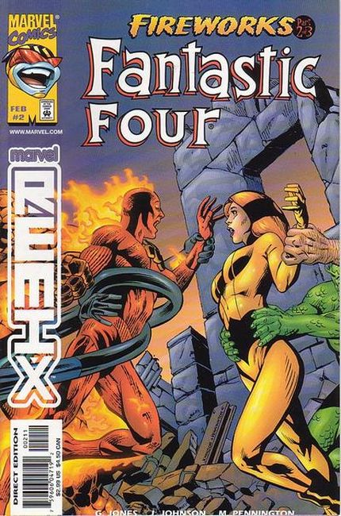
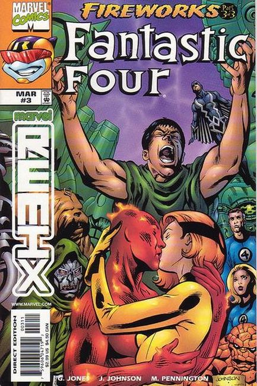

3 Issues Limited Series. Part of the "Marvel Remix" idea of re-telling great moments of Marvel history. This series "remixes" events from FANTASTIC FOUR (Volume 1, 1961 series) #36, 44-47, 49 and 54, which featured the introduction of the Inhumans.

Each Remix story will reframe milestone sagas from a different point-of-view or narrative. Remix explores potential events previously unseen, expands the involvement of key characters, or explosively illustrates monumental moments. Kicking off the series is the dramatic first meeting between the mysterious Inhumans and the world-famous Fantastic Four--focusing on the emotionally-charged romance between the Human Torch and Crystal.

The two star-crossed elemental teens are caught in a storm of their own raging hormones and a battle between races which threatens to destroy the sacred land of Attilan. But the burning love of these crazy kids soon erupts into an obsessive passion which makes Romeo and Juliet's courtship look like a high school crush! Can two teens unite opposing super-powered armies--or will their forbidden love trigger all-out war?